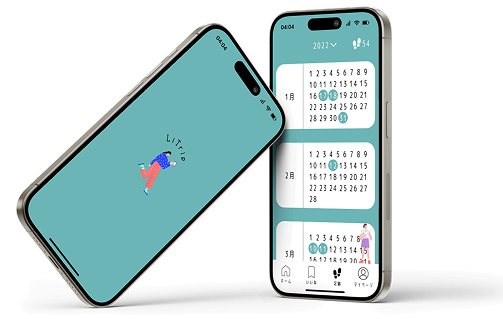

つくったもの

わたしについて
小林 未唯 KOBAYASHI MIYU
2003/04/04 愛知県名古屋市出身
愛知工業大学情報科学部情報科学科
メディア情報専攻
好きなこと 美味しいものを食べること, 映画見ること, 音楽聴くこと, お昼寝すること, ゲームすること, 旅行に行くこと, ジブリ鑑賞
PORTFOLIO
2003/04/04 愛知県名古屋市出身
愛知工業大学情報科学部情報科学科
メディア情報専攻
好きなこと 美味しいものを食べること, 映画見ること, 音楽聴くこと, お昼寝すること, ゲームすること, 旅行に行くこと, ジブリ鑑賞